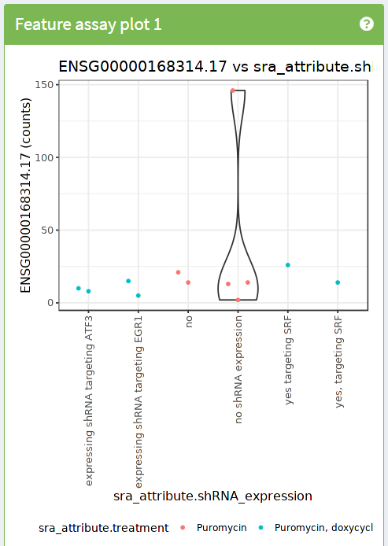

3 recount3 introduction
Instructor: Leo
Don’t let useful data go to waste by Franziska Denk https://doi.org/10.1038/543007a
3.1 recount projects
ReCount: data from 20 studiesrecount: over 70k human bulk RNA-seq samples uniformly processed- https://jhubiostatistics.shinyapps.io/recount/
pkgdowndocumentation website: http://leekgroup.github.io/recount/- Bioconductor documentation website: http://bioconductor.org/packages/recount
- Main paper (2017) http://www.nature.com/nbt/journal/v35/n4/full/nbt.3838.html
- Paper that explains why the counts are different from the usual ones https://f1000research.com/articles/6-1558/v1
- Example analyses we did and provided as a companion website for the 2017 paper http://leekgroup.github.io/recount-analyses/
recount3: over 700k bulk RNA-seq samples from human and mouse- http://rna.recount.bio/
pkgdowndocumentation website: http://research.libd.org/recount3/- Bioconductor documentation website: http://bioconductor.org/packages/recount3
- Pre-print: May 2021 https://doi.org/10.1101/2021.05.21.445138
- Paper: November 2021 https://doi.org/10.1186/s13059-021-02533-6
- These projects help such that anyone, particularly those without access to a high performance computing (HPC) system (aka a compute cluster), can access these datasets.
- It’s like democratizing access to the gene expression data ^^.
3.2 Using recount3
Check the original documentation here and here.
Let’s first load recount3 which will load all the required dependencies including SummarizedExperiment.
Next we need to identify a study of interest as well as choose whether we want the data at the gene, exon, or some other feature level. Once we have identified our study of interest, we can download the files and build a SummarizedExperiment object using recount3::create_rse() as we’ll show next. create_rse() has arguments through which we can control what annotation we want to use (they are organism-dependent).
## Lets download all the available projects
human_projects <- available_projects()
#> 2024-06-09 03:34:22.602614 caching file sra.recount_project.MD.gz.
#> adding rname 'http://duffel.rail.bio/recount3/human/data_sources/sra/metadata/sra.recount_project.MD.gz'
#> 2024-06-09 03:34:23.412278 caching file gtex.recount_project.MD.gz.
#> adding rname 'http://duffel.rail.bio/recount3/human/data_sources/gtex/metadata/gtex.recount_project.MD.gz'
#> 2024-06-09 03:34:24.237851 caching file tcga.recount_project.MD.gz.
#> adding rname 'http://duffel.rail.bio/recount3/human/data_sources/tcga/metadata/tcga.recount_project.MD.gz'
## Find your project of interest. Here we'll use
## SRP009615 as an example
proj_info <- subset(
human_projects,
project == "SRP009615" & project_type == "data_sources"
)
## Build a RangedSummarizedExperiment (RSE) object
## with the information at the gene level
rse_gene_SRP009615 <- create_rse(proj_info)
#> 2024-06-09 03:34:27.451076 downloading and reading the metadata.
#> 2024-06-09 03:34:27.701651 caching file sra.sra.SRP009615.MD.gz.
#> adding rname 'http://duffel.rail.bio/recount3/human/data_sources/sra/metadata/15/SRP009615/sra.sra.SRP009615.MD.gz'
#> 2024-06-09 03:34:28.474108 caching file sra.recount_project.SRP009615.MD.gz.
#> adding rname 'http://duffel.rail.bio/recount3/human/data_sources/sra/metadata/15/SRP009615/sra.recount_project.SRP009615.MD.gz'
#> 2024-06-09 03:34:29.307889 caching file sra.recount_qc.SRP009615.MD.gz.
#> adding rname 'http://duffel.rail.bio/recount3/human/data_sources/sra/metadata/15/SRP009615/sra.recount_qc.SRP009615.MD.gz'
#> 2024-06-09 03:34:30.079127 caching file sra.recount_seq_qc.SRP009615.MD.gz.
#> adding rname 'http://duffel.rail.bio/recount3/human/data_sources/sra/metadata/15/SRP009615/sra.recount_seq_qc.SRP009615.MD.gz'
#> 2024-06-09 03:34:30.899052 caching file sra.recount_pred.SRP009615.MD.gz.
#> adding rname 'http://duffel.rail.bio/recount3/human/data_sources/sra/metadata/15/SRP009615/sra.recount_pred.SRP009615.MD.gz'
#> 2024-06-09 03:34:31.528503 downloading and reading the feature information.
#> 2024-06-09 03:34:31.747325 caching file human.gene_sums.G026.gtf.gz.
#> adding rname 'http://duffel.rail.bio/recount3/human/annotations/gene_sums/human.gene_sums.G026.gtf.gz'
#> 2024-06-09 03:34:32.870682 downloading and reading the counts: 12 samples across 63856 features.
#> 2024-06-09 03:34:33.064446 caching file sra.gene_sums.SRP009615.G026.gz.
#> adding rname 'http://duffel.rail.bio/recount3/human/data_sources/sra/gene_sums/15/SRP009615/sra.gene_sums.SRP009615.G026.gz'
#> 2024-06-09 03:34:33.874902 constructing the RangedSummarizedExperiment (rse) object.## Explore the resulting object
rse_gene_SRP009615
#> class: RangedSummarizedExperiment
#> dim: 63856 12
#> metadata(8): time_created recount3_version ... annotation recount3_url
#> assays(1): raw_counts
#> rownames(63856): ENSG00000278704.1 ENSG00000277400.1 ... ENSG00000182484.15_PAR_Y ENSG00000227159.8_PAR_Y
#> rowData names(10): source type ... havana_gene tag
#> colnames(12): SRR387777 SRR387778 ... SRR389077 SRR389078
#> colData names(175): rail_id external_id ... recount_pred.curated.cell_line BigWigURLWe can also interactively choose our study of interest using the following code or through the recount3 study explorer.
## Explore available human projects interactively
proj_info_interactive <- interactiveDisplayBase::display(human_projects)
## Choose only 1 row in the table, then click on "send".
## Lets double check that you indeed selected only 1 row in the table
stopifnot(nrow(proj_info_interactive) == 1)
## Now we can build the RSE object
rse_gene_interactive <- create_rse(proj_info_interactive)Now that we have the data, we can use recount3::transform_counts() or recount3::compute_read_counts() to convert the raw counts into a format expected by downstream tools. For more details, check the recountWorkflow paper.
## We'll compute read counts, which is what most downstream software
## uses.
## For other types of transformations such as RPKM and TPM, use
## transform_counts().
assay(rse_gene_SRP009615, "counts") <- compute_read_counts(rse_gene_SRP009615)## Lets make it easier to use the information available for this study
## that was provided by the original authors of the study.
rse_gene_SRP009615 <- expand_sra_attributes(rse_gene_SRP009615)
colData(rse_gene_SRP009615)[
,
grepl("^sra_attribute", colnames(colData(rse_gene_SRP009615)))
]
#> DataFrame with 12 rows and 4 columns
#> sra_attribute.cells sra_attribute.shRNA_expression sra_attribute.source_name sra_attribute.treatment
#> <character> <character> <character> <character>
#> SRR387777 K562 no SL2933 Puromycin
#> SRR387778 K562 yes, targeting SRF SL2934 Puromycin, doxycycline
#> SRR387779 K562 no SL5265 Puromycin
#> SRR387780 K562 yes targeting SRF SL3141 Puromycin, doxycycline
#> SRR389079 K562 no shRNA expression SL6485 Puromycin
#> ... ... ... ... ...
#> SRR389082 K562 expressing shRNA tar.. SL2592 Puromycin, doxycycline
#> SRR389083 K562 no shRNA expression SL4337 Puromycin
#> SRR389084 K562 expressing shRNA tar.. SL4326 Puromycin, doxycycline
#> SRR389077 K562 no shRNA expression SL1584 Puromycin
#> SRR389078 K562 expressing shRNA tar.. SL1583 Puromycin, doxycyclineWe are now ready to use other bulk RNA-seq data analysis software tools.
3.3 Exercise
Exercise 1:
Use iSEE to reproduce the following image

- Hints:
- Use dynamic feature selection
- Use information from columns (samples) for the X axis
- Use information from columns (samples) for the colors
- (optional) Create your free account at https://www.shinyapps.io/ and share your
iSEEapp with the world.- Regrettably
iSEE::iSEE()will need more than the default free 1 GB RAM option available from https://www.shinyapps.io/. - Real examples used on a paper: https://github.com/LieberInstitute/10xPilot_snRNAseq-human#explore-the-data-interactively.
- Example from another course: https://libd.shinyapps.io/SRP009615/. It was created with https://github.com/lcolladotor/rnaseq_2023_notas_en_vivo/blob/main/app.R.
- Regrettably
3.4 Community
- recount2 and 3 authors on Twitter:
- More about the different types of counts:
If I'm using recount2 data for a differential analysis in DEseq2, should I be using the original counts, or the scaled counts?@mikelove @lcolladotor #rstats #Bioconductor
— Dr. Robert M Flight, PhD (@rmflight) January 29, 2021
- Tweets from the community
From a student in the LCG-UNAM 2021 course:
@lcolladotor
— Axel Zagal Norman (@NormanZagal) February 25, 2021
Earlier I was looking for some data to analyze in recount, they have so much, I seriously can't decide what to use! https://t.co/fIJwXq46Tz
Thanks for such an useful package!@chrisnwilks @BenLangmead @KasperDHansen @AbhiNellore @Shannon_E_Ellis @jtleek
Exploring the possibility of using recount3 data for an analysis (January 2022):
I have found a novel exon expressed in a cancer sample. I would like to search TCGA/SRA to identify other samples with the same/similar exon. It will be rare. Can I use Recount3, megadepth for this? @jtleek @lcolladotor @BenLangmead
— Alicia Oshlack (@AliciaOshlack) January 5, 2022
Others discussing meta analyses publicly on Twitter:
Thinking on this a bit it is strange how few people are doing “medium-sized” meta analyses of transcriptiomics. One on end you have @BenLangmead @lcolladotor reprocessing (with a touch of analysis) most of SRA. And you see papers pulling an dataset or two to corroborate.
— David McGaughey (@David_McGaughey) February 1, 2022